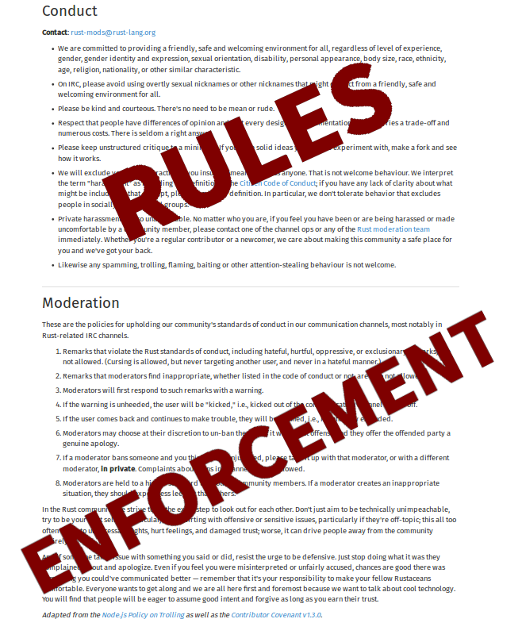

Rust's Community Automation
E. Dunham, 9/27/2016, Automacon 2.0
@qedunham
automacon@edunham.net
- Things Rust does
- You can too!
fn main() {
println!("Safe, Concurrent, Fast.");
}
- rust-lang.org
- meetup.com/pdxrust
Human interaction work necessary to an open source project's success.
Offloading peoples' work onto a system.
- Build tools that do people things.
- Build tools that do people things.
- Hack social expectations
- Which contributors we encourage
- Which contributors we encourage
- What code we maintain
- Which contributors we encourage
- What code we maintain
- Robots!

- Maintain code quality
- Social pleasantries
- Maintain code quality
- Social pleasantries
- Guide new contributors
- Maintain code quality
- Social pleasantries
- Guide new contributors
- Widen contributor pipeline
Automatically maintian a repository of code that always passes all the tests.
"Will all the tests pass after we merge this code?"
- Write tests
- Run the tests on every change
- Write tests
- Run the tests on every change
- Merge only if the tests passed
- Write tests
- Run the tests on every change
- Merge only if the tests passed
- Maintain the tests
- Welcome new contributors
- Assign code reviewer
- Welcome new contributors
- Assign code reviewer
- Nag when needed
- Issue & PR Templates
- Notifications
"I'm new, what should I work on?"
- Easy-tagged Issues
- Reward maintainers for triage
- Keep good docs
- Value docs/triage help
- Keep good docs
- Value docs/triage help
- List introductory bugs
CONTRIBUTING.txt
http://www.codetriage.com/
http://issuehub.io/
http://up-for-grabs.net/
http://yourfirstpr.github.io/
https://openhatch.org